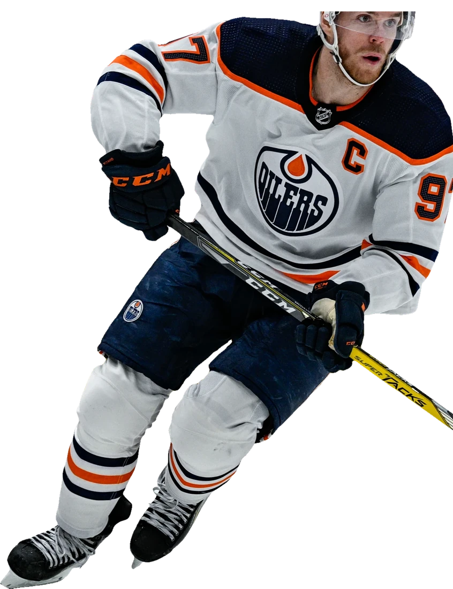

Сегодня
Прогнозы на хоккей и футбол
На каждый матч КХЛ, НХЛ и топ-лиг Европы — вероятность нашей модели рядом с реальной линией. Что из этого брать, решает автор канала.Расчёт модели на каждый матч КХЛ, НХЛ и топ-лиг, отбор — автора канала.
- Собственная модель на каждый матч
- Отбор автора, а не автомат
- Без VIP и рекламы букмекеров
Бесплатно. Прогнозы выходят до начала матча. Как считает модель · Итоги прогнозов

Хоккей
матчи загружаются
Открыть раздел
Футбол
матчи загружаются
Открыть разделФото: Kylian Mbappé — Bryan Berlin, CC BY-SA 4.0, Wikimedia Commons
Честные итоги
Итоги прогнозов
Все прогнозы канала со счётом матча и ссылкой на пост — на отдельной странице.
Все прогнозы и итогиКак появляется прогноз
Форма
Последние игры, атака и оборона, место в таблице.
Линия
Кэфы рынка рядом с вероятностью модели.
Выбор
От 60 % при кэфе от 1,6. Нет такой ставки — разбор без выбора.
Автор
Смотрит составы, вратаря, мотивацию. Может снять ставку.
Все прогнозы — в Telegram
- Посты на каждый матчС кэфом и вероятностью по модели.
- РоликиМатчи дня и тренды коротко.
- Итоги дняВсе прогнозы подряд. Подписка бесплатная.
Вопросы
Это бесплатно?
Да. Канал @jarvibet бесплатный, прогнозы выходят до начала матча. Без VIP, без предоплаты, без «верняков».
А если не сработает?
Гарантий нет: прогноз — оценка вероятности, и у любой модели бывают плохие серии. Поэтому цифры и линия всегда рядом, а решать вам.
Где посмотреть итоги?
На странице «Итоги прогнозов»: все прогнозы канала со счётом матча и ссылкой на пост, по месяцам. И каждое утро в канале @jarvibet — итоги дня.
Какие лиги?
Хоккей: КХЛ и НХЛ. Футбол: АПЛ, Ла Лига, Серия А, Бундеслига, Лига 1, РПЛ, Лига чемпионов и Лига Европы.
Что такое «ВЫБОР»?
Ставка, у которой модель даёт от 60 % при кэфе от 1,6. Остальные матчи — разбор без выбора.
Почему кэф от 1,6?
Ниже — выигрыш слишком мал для риска. Чем выше кэф, тем больше случайности, поэтому почти все ставки — до 2,3.
18+. Аналитика, а не призыв делать ставки. Выигрыш не гарантирован.